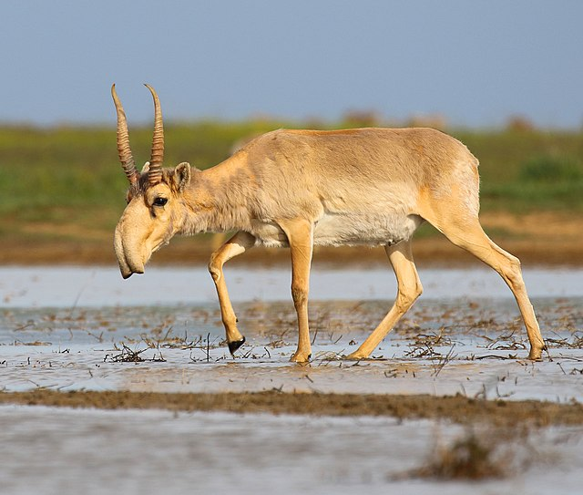

MAMMALS
Saiga
Saiga is an artiodactyl mammal from the subfamily of true antelopes. A relatively small artiodactyl animal, body length 110-146 cm, tail 8-12 cm, height at the withers 60-79 cm. Weight 23-40 kg. Elongated torso on thin, relatively short legs. The nose in the form of a soft, swollen, mobile proboscis with rounded, close-knit nostrils creates the effect of a "hunchbacked muzzle". Ears with a rounded top. The middle hooves are larger than the lateral ones. Only males have horns. They are approximately equal in length to the length of the head and on average reach 30 cm, translucent, yellowish-white, irregular lyreshaped, two-thirds from below have transverse annular rollers, located on the head almost vertically. The belly is whitish. Its eyes are pale green or grey in color. Its muzzle is short and its forehead domed. Its nasal cavities are large. The fur is thick with hairs between 5 and 12 cm (2.0 and 4.7 in) long. Its body is stocky, short-legged, and slightly smaller than the other cats of the genus Panthera, reaching a shoulder height of 56 cm (22 in), and ranging in head to body size from 75 to 150 cm (30 to 59 in). Its tail is 80 to 105 cm (31 to 41 in) long. Summer fur is yellowish-red, darker along the midline of the back and gradually lightening towards the belly, without a tail "mirror", low and relatively rare. Winter fur is much taller and thicker, very light, clay-gray. Molts twice a year: in spring and autumn.
Brown bear

The brown bear, or common bear, is a mammal of the bear family, one of the largest terrestrial predators. The brown bear is a forest animal. Its usual habitats in Russia are solid woodlands with windbreak and burning with a dense growth of hardwoods, shrubs and grasses; it can enter both tundra and high-altitude forests. In Europe, it prefers mountain forests; in North America, it is more common in open areas — in the tundra, in alpine meadows and on the coast. The average weight and body length of bears in Kamchatka were 268.7 kg and 216.7 cm for adult males (older than 7 years) and 174.9 kg and 194.5 cm for adult females, respectively, which is higher than in other regions of Eurasia (except, perhaps, Primorye, where it is believed that brown bears reach similar sizes. The belly is whitish. Its eyes are pale green or grey in color. Its muzzle is short and its forehead domed. Its nasal cavities are large. The fur is thick with hairs between 5 and 12 cm (2.0 and 4.7 in) long. Its body is stocky, short-legged, and slightly smaller than the other cats of the genus Panthera, reaching a shoulder height of 56 cm (22 in), and ranging in head to body size from 75 to 150 cm (30 to 59 in). Its tail is 80 to 105 cm (31 to 41 in) long.
Snow leopard

The snow leopard (Panthera uncia), also known as the ounce, is a felid in the genus Panthera native to the mountain ranges of Central and South Asia. It is listed as Vulnerable on the IUCN Red List because the global population is estimated to number fewer than 10,000 mature individuals and is expected to decline about 10% by 2040. It is threatened by poaching and habitat destruction following infrastructural developments. It inhabits alpine and subalpine zones at elevations from 3,000 to 4,500 m (9,800 to 14,800 ft), ranging from eastern Afghanistan, the Himalayas and the Tibetan Plateau, to southern Siberia, Mongolia and western China. In the northern part of its range, it also lives at lower elevations. Taxonomically, the snow leopard was long classified in the monotypic genus Uncia. Since phylogenetic studies revealed the relationships among Panthera species, it has been considered a member of that genus. Two subspecies were described based on morphological differences, but genetic differences between the two have not been confirmed. It is therefore regarded as a monotypic species. The snow leopard's fur is whitish to grey with black spots on head and neck, with larger rosettes on the back, flanks and bushy tail. The belly is whitish. Its eyes are pale green or grey in color. Its muzzle is short and its forehead domed. Its nasal cavities are large. The fur is thick with hairs between 5 and 12 cm (2.0 and 4.7 in) long. Its body is stocky, short-legged, and slightly smaller than the other cats of the genus Panthera, reaching a shoulder height of 56 cm (22 in), and ranging in head to body size from 75 to 150 cm (30 to 59 in). Its tail is 80 to 105 cm (31 to 41 in) long.